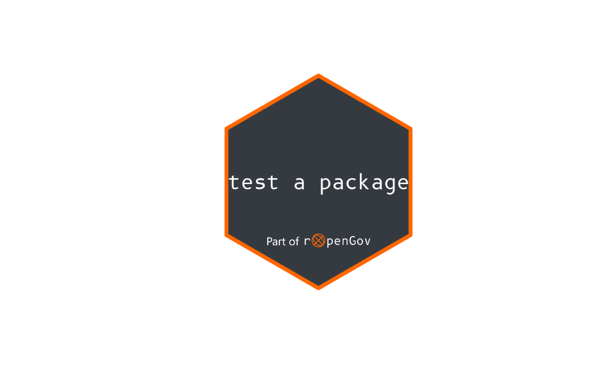

Creates a logo automatically with hexSticker::sticker().
Optionally, create also favicons with pkgdown::build_favicons().
Usage
rog_logo(
pkgname,
filename = "man/figures/logo.png",
p_x = 1,
p_y = 1,
p_size = 202.6 * nchar(pkgname)^-1.008,
overwrite = FALSE,
favicons = TRUE
)Arguments
- pkgname
Name of the package. If not present it would be autodetected by the function.
- filename
filename to save sticker
- p_x
x position for package name
- p_y
y position for package name
- p_size
font size for package name
- overwrite
Should the current logo be overwritten? When
TRUEit would runusethis::use_logo().- favicons
Logical, do you want to create favicons with
pkgdown::build_favicons()?
See also
hexSticker::sticker(), usethis::use_logo(),
pkgdown::build_favicons().
Other extras:
rog_add_template_pkgdown(),
rog_badge_ropengov(),
rog_load_font(),
rog_pals
Examples
tmp <- tempfile(fileext = ".png")
rog_logo("test a package", tmp, overwrite = FALSE, favicons = FALSE)
#> B612 Mono font loaded
#> Logo created on C:\Users\RUNNER~1\AppData\Local\Temp\RtmpucgfAR\file10404b0a258f.png
# Display
logo <- magick::image_read(tmp)
logo
#> # A tibble: 1 × 7
#> format width height colorspace matte filesize density
#> <chr> <int> <int> <chr> <lgl> <int> <chr>
#> 1 PNG 518 600 sRGB TRUE 32599 118x118
plot(logo)
